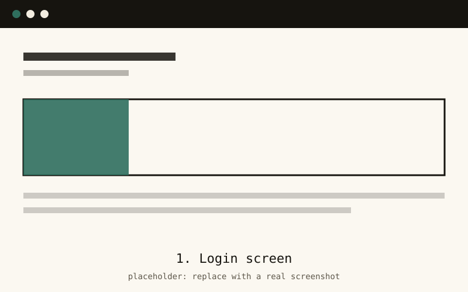
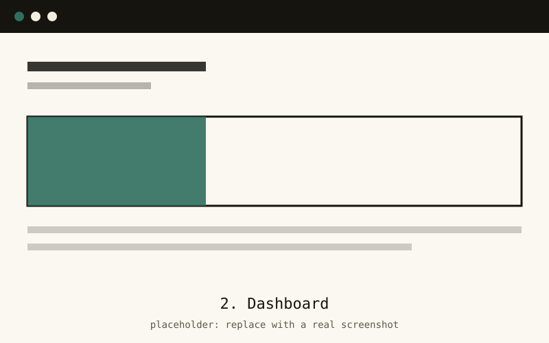
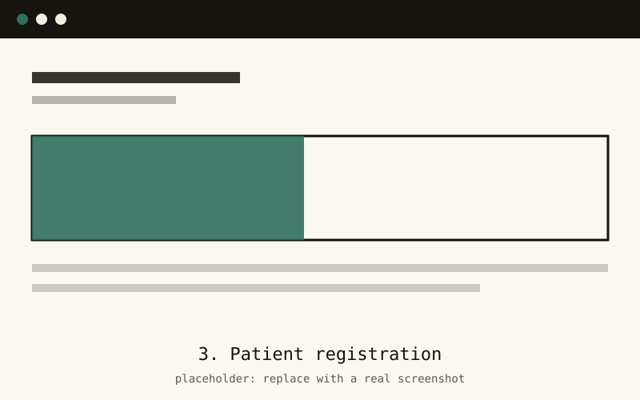
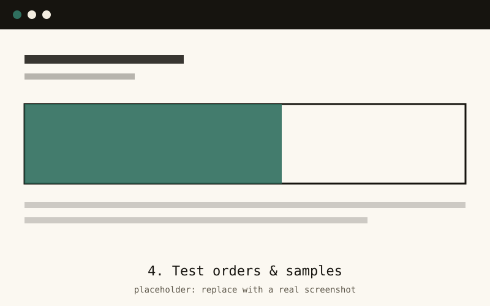
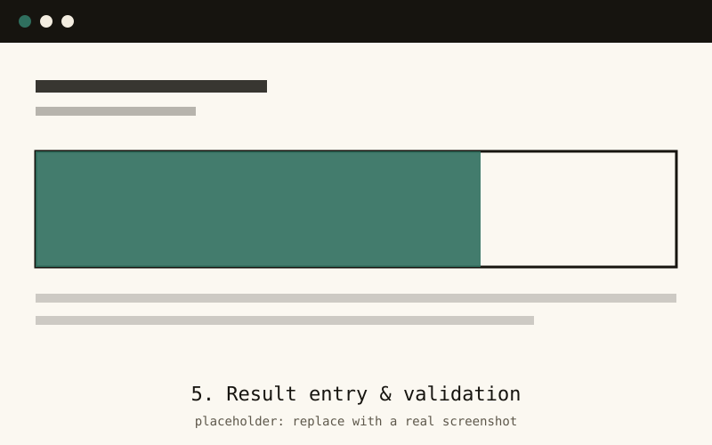
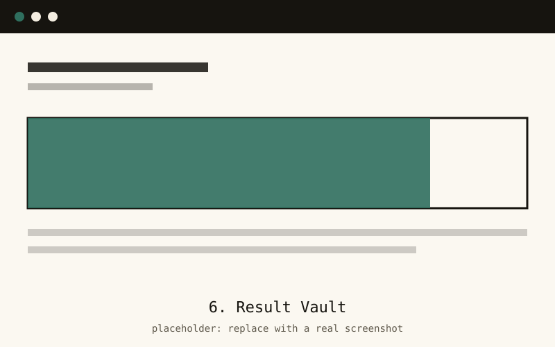
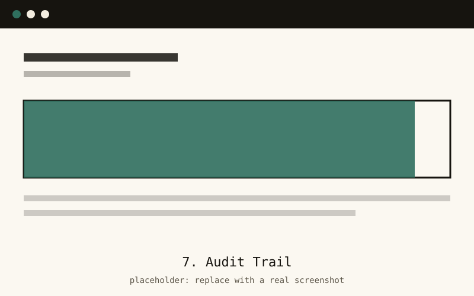

Case study · Team project
Santé Diagnostics (LIMS)
A Laboratory Information Management System that tracks a lab's work from login to validated result, with secure result storage, email notifications and a full audit trail.
What the project is about
Santé Diagnostics is a Laboratory Information Management System (LIMS) for a diagnostic lab. It brings the lab's records into one application: staff log in, record tests and results, validate them, and store the final reports, and every important action is logged.
It is a desktop application built with Java 17 and JavaFX 21 on a PostgreSQL database, using Maven and an MVC structure (models, DAOs, services, controllers and FXML views).
The problem
A lab handles sensitive patient results, and mistakes or missing records are costly. Without a proper system it is hard to know who changed what, to find past reports quickly, or to tell patients and doctors as soon as a result is ready.
My role
- Set up the project architecture that the rest of the team built on.
- Wrote the models, DAOs and services that talk to the PostgreSQL database.
- Built the login flow.
- Set up the GitHub workflow and merged teammates' work for the final submission.
Features
- Secure login: each user signs in to their own account.
- Result validation: results are checked and validated before release.
- Email notifications: a Gmail SMTP email is sent automatically when a result is validated.
- Result Vault: validated reports are stored and can be found again later.
- Audit Trail: important actions are recorded so you can see who did what, and when.
Screenshots
Click any screenshot to see it full size.







Technologies used
- Java 17
- JavaFX 21
- FXML
- PostgreSQL
- Maven
- Gmail SMTP
- Git & GitHub
What I learned
- A clear structure early on (models, DAOs, services) makes it much easier for a team to work in parallel.
- Database constraints like foreign keys catch bugs, but only if your code respects them.
- Merging other people's work well takes good Git habits: small commits, clear branches, frequent pulls.
- In a lab system, traceability matters as much as features. The audit trail is not optional.